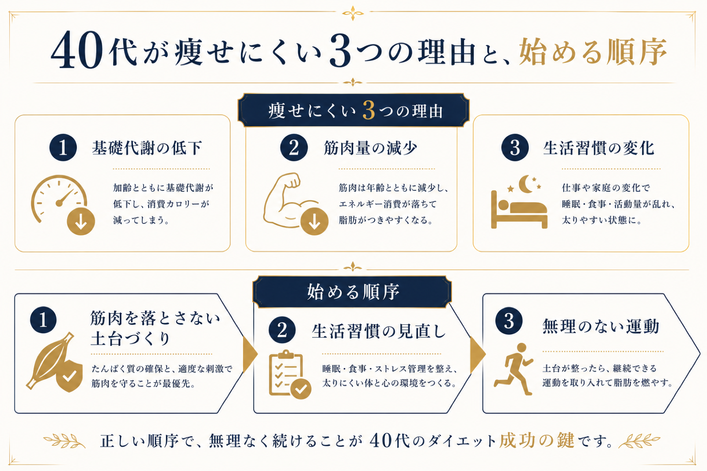

20代の頃と同じように食事を減らし、たまに運動もしている。なのに40代になったら急に痩せない——そんな戸惑いを、体験にいらっしゃる方からよく聞きます。これはあなたの努力不足ではありません。40代の身体は20代とは仕組みが変わっていて、やり方も変える必要があるだけです。この記事では、40代で痩せにくくなる理由と、「何から始めればいいか」を解説します。
40代で「痩せない」3つの理由
① 基礎代謝が落ちている
基礎代謝は、何もしなくても消費されるエネルギーです。加齢とともに少しずつ低下し、40代では20代の頃より確実に落ちています。つまり同じ食事量でも、以前より余りやすい身体になっているということです。
② 筋肉量が減っている
筋肉は年齢とともに自然に減っていきます。そして筋肉は基礎代謝の大きな部分を担うため、筋肉が減る＝さらに代謝が落ちるという悪循環に入ります。40代のダイエットで筋肉を無視すると、痩せてもリバウンドしやすい身体になります。
③ 生活習慣・ホルモンの変化
デスクワーク中心の生活、睡眠の質の低下、ホルモンバランスの変化——これらも重なります。20代なら多少無理をしても戻せましたが、40代は日々の習慣そのものが体型に反映されやすくなります。

40代のダイエットは「何から」始めるべきか
結論から言うと、いきなり食事制限や激しい運動から入らないことです。40代が最初に手をつけるべきは次の順序です。
- 筋肉を落とさない土台づくり——代謝の要である筋肉を守る。これが40代ダイエットの最優先
- 生活習慣の見直し——睡眠・食事のリズムなど、体型に直結する日々の習慣を整える
- 無理のない運動習慣——続けられる範囲で身体を動かし、動ける体を保つ
目指すのは、単に体重を落とすことではなく、ダイエットとボディメイクを通じて、健康的に動ける身体になることです。そのために、必要に応じて姿勢や身体のケア（整体的なアプローチ）も手段として取り入れます。

なぜ「食事制限だけ」は40代に逆効果なのか
手っ取り早いからと極端な食事制限に走ると、40代では特に危険です。食事を減らしすぎると、身体は脂肪だけでなく筋肉も削ってエネルギーにします。すると基礎代謝がさらに落ち、少し食べただけで太る「痩せにくい身体」が完成してしまいます。これがリバウンドの正体です。40代こそ、筋肉を守りながら整えることが遠回りに見えて近道です。
TOKOWAKAの、40代への向き合い方
私たちは、意味のない追い込みをしません。まず身体を動かせる土台を整え、筋肉を守りながら、あなたの目的（ダイエット・ボディメイク・健康的に動ける体）に向かって一歩ずつ積み上げます。完全個室・マンツーマンで、運動が苦手な方も人目を気にせず取り組めます。「40代だから」と諦める必要はありません。
同じ努力で結果が出ないと感じているなら、それはやり方を40代仕様に変えるサインです。まずは0円の体験で、今の身体の状態を一緒に確かめてみませんか。
よくある質問
40代のダイエットは何から始めればいいですか？
40代で痩せないのはなぜですか？
40代でも食事制限だけで痩せられますか？
運動が苦手な40代でも大丈夫ですか？